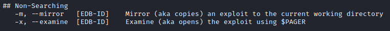
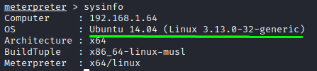
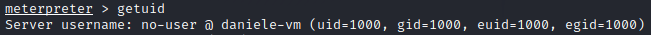

search exploit for Linux/Windows (searchsploit, google)
We can search for Linux distribution and Linux kernel for known vulnerabilities
search on Searchsploit
Searchsploit is offered by Offensive Security. It searches an offline copy of its Exploit Database, which can be found at www.exploit-db.com .
Searchsploit should be kept up-to-date to ensure that you are searching the latest list of exploits.
root@kali:/# searchsploit -u #update the database (--update)
root@kali:/# searchsploit linux kernel 3.13.0 --exclude="/dos/"
root@kali:/# searchsploit linux kernel 3.13.0 --exclude="/dos/"
--exclude="/dos/" → remove DoS exploits from the results
◇ When we are search exploits for a vulnerable DNS server(seen here), if the server is running BIND dns software, only using “bind” as parameter can give us a lot of irrelevant results.
Instead we can search “isc bind” since the Internet Systems Consortium (ISC) is responsible for BIND
All the exploits of Searchsploit are already stored on our machine.
◇ Mirror(copy) an exploit to your current directory by running(-m, --mirror):
root@kali:/# searchsploit -m [exploit database id]
◇ Examine(open) the exploit using $pager
root@kali:/# searchsploit -x [exploit database id]

search on Metasploit
There are only few modules available to exploit locally Linux systems, to see them we can use:
meterpreter > background
msf> search type:exploit platform:linux | grep local
msf> search type:exploit platform:linux | grep local
search on Google
Because there are only a few modules we have to search the exploits manually.
The best way to do this is search the target OS on Google followed by "privilege escalation"

